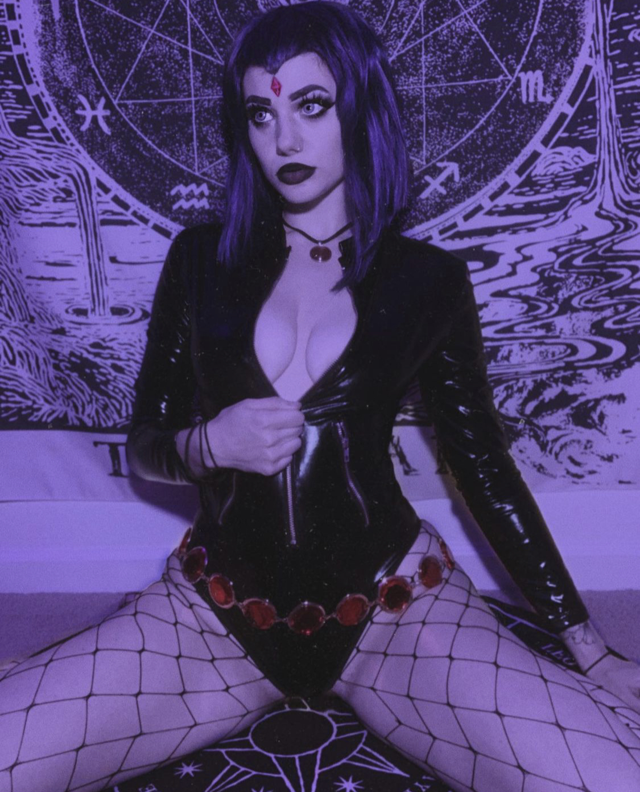
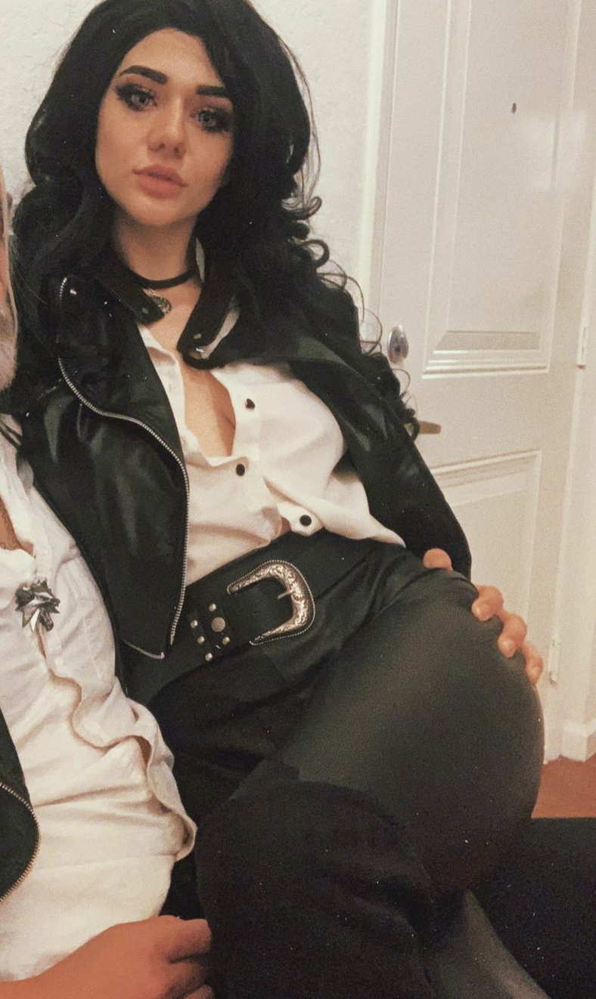

Figure 2 - Left: Riley's set. Right: Riley posing for OnlyFans content - cosplaying Tris from the Witcher series. Riley creates content daily featuring nude pictures or wearing lingerie. Riley's efforts have gained them 34 subscribers.
What is OnlyFans?
OnlyFans was founded in 2016 by Timothy Stokely and is often described as, "Instagram but for porn." On this subscription-based platform, content creators charge users a monthly fee to view their feed. Creators include models, influencers, celebrities, porn stars, and everyday people. The material posted ranges from images and videos of day to day life to pornographic content. In addition to accessing creators feed, subscribers can pay to send private messages and tips. In return, creators can produce material specifically for individuals . For many users, OnlyFans is a platform more intimate than pornography. Subscribers feel that they catch a glimpse into the real lives of the people they follow.
Dr. Dulcinea Pitagora, a New York City-based psychotherapist and sex therapist explains that OnlyFans, "provides a boundaried meeting place for people with common interests to safely interact with other people, and to charge for their time."
According to Influencer Marketing Hub, OnlyFans has 50 million registered users. The average earnings on the site are $180 per month but with stories of some individuals bringing in over $20,000 a month, hopeful creators continue to sign up. The platform gains 7,000-8,000 creators a day.
Dr. Pitagora notes OnlyFans, "provides real-time reciprocal exchanges (which) can be particularly meaningful for people who otherwise would watch recorded performances and therefore have no option for back-and-forth communication."
In these one-sided or parasocial relationships, followers form bonds with performers even though they have never met outside of a computer screen. They begin to see them as friends and even romantically. What happens when creators invite strangers into their personal lives and interact with them online?
Josiah (who chose to remain anonymous), is an OnlyFans user subscribed to multiple creators. He first visited the platform to help a friend working as a creator who was struggling financially. Once he explored more of what the platform had to offer, he began to enter the intimate lives of those he had never known prior.
"Some have been close friends of mine before subscribing, others have been people that I found myself infatuated with," he said.
In certain intimate contexts, he explained, "there have been conversations that cause me to forget the kind of buyer/seller relationship."

Figure 3 - Riley's OnlyFans content - cosplaying as DC comic book character Raven.
History of Parasocial
Parasocial relationships existed well before the advent of screens.
"It goes back to ancient times, people had celebrity crushes and celebrity followings," said Dr. Riva Tukachinsky of Chapman University.
Lord Byron, the Romantic poet, received fan mail and even pubic hair from a young woman particularly enamored by him. In the past, parasocial relationships occurred more commonly with fictional characters, well known athletes and actors.
Technology has changed parasocial relationships by making public figures more accessible. During the days of "Beatlemania," fans had to wait for newsletters in the mail or travel to attend a concert. With the development of platforms like YouTube, Instagram, and SnapChat, these one-sided relationships have taken on a new form. Creators are accessible and much more information is at the public's fingertips.
As Dr. Tukachinsky says, "you can see Jennifer Lopez in her backyard, Madonna in her bathtub, Kardashian selfies in the bathroom."
"Now you can potentially get in touch with one of your favorite celebrities," said Dr. Jaye Derrick of the University of Houston. "You feel psychologically close to this person and to some extent, you project what you think they are like onto them and you feel like you know who they are."
Tuckachinsky explains that, "obviously, every adult person is able to differentiate between reality and representation of reality so we are not going to jump on the screen to rescue the girl, or smack the TV when we see a snake . . . but our initial reaction is 'this is real' and then we have to override it and say 'this is not real.'"
This blending of real and fantasy can be even more confusing when celebrities respond and develop dialogue with viewers.
Parasocial relationships used to be based primarily on crushes and feelings of philia or friendship, but with the rise of platforms like OnlyFans, this phenomenon is expanding into the world of sex work.
Subscriber Perspective
Josiah seemed self-aware that this kind of connection can come with elements of danger. For the most part, sex workers will see the most profit from those who have urges they need to fulfill. In those kinds of mindsets, it can be hard to think clearly and make informed decisions. During surges in feelings of sexual frustration, he finds himself subscribing to four or five creators at a time, only to remove his card from the site after realizing how much he just spent in those vulnerable moments.
Although most creators seem genuine, Josiah admits that there are those who "only, understandably, are after your money."" He described those types of creators as "predatory," taking advantage of those aforementioned moments of weakness and treating him - as he phrased it - "like a cash cow." The creators he chooses to renew his monthly subscriptions to, unsurprisingly, are the ones who take genuine interest in their fans by keeping in contact and creating specialized content for them.
Creator Perspective
Since joining the platform last March, Riley has earned just over $4,000, enough to help with a cross-country move to California. Despite landing a job since the move, they've kept posting content to assist with financial security.
Figure 4 - This graph shows the breakdown of how much one content creator, Erin Riley, made since the beginning of the pandemic. Riley made the most in September 2020 and the least in July 2020. The peak in Riley's earnings directly coincides with the persistence of their advertising on platforms such as Instagram and Tik Tok.
"OnlyFans definitely fills in the gaps with capacity issues, since the hours are so short" they said. "So it kind of just picks up the slack, you know?"
Figure 5 - Income based on the services of OnlyFans model, Erin Riley's data. Most of their income came from subscriptions and messages.
While most of their earnings come through monthly subscription fees, a substantial amount stems from the platform's messaging feature, where fans can pay extra to chat with creators. Surprisingly, Riley explains that the content of these messages aren't mainly sexual. If the conversations veer in that direction, they'll follow suit, but they're mostly emotionally supportive in nature. Riley's fans provide a substantial amount of reassurance and consolation when their favorite creator is going through a rough patch. And that energy goes both ways.
"I do the same for them anytime they offer support for me, from an emotional and mental standpoint," Riley said. "Rather than just financial, because it really does help a lot to have that support. So I try to offer that as much as I possibly can for them. And a lot of them do that for me as well."
In terms of acceptance in their own social circles, Riley ensures that the people surrounding them "are going to be supportive of everything I do." This includes the likes of their friends, their own mother, and their partner - who is fine with appearing in content together as long as he's wearing character cosplay.

Figure 6 - Riley with their partner, cosplaying as characters from the Witcher series.
Figure 7 - Message excerpts from Riley's OnlyFans account can provide emotional support.
The parasocial relationships formed through OnlyFans can be multifaceted and complex. The word clouds and charts below explore relationships between creators and subscribers by analyzing Twitter content from OnlyFans creator's accounts.
OnlyFans creator Rose - who wished to remain anonymous - expressed that their experience with the platform is taxing their mental health. Rose started with OnlyFans last April, a decision they remained hesitant about having previously lost a job for camming - live streaming sexually explicit content to those who wish to buy in. When the pandemic took their job away and New York City rent loomed ever closer over their head, Rose turned to OnlyFans. They've made $80 so far.
A lot of the comments that Rose received while doing cam work contained pressure on Rose's end - a non-binary individual - to present as more feminine to satiate the requests of their audience. As a result, an overwhelming amount of gender dysphoria led to a negative impact on their overall mental state.
OnlyFans creator, Jen, 30, came to Boston to work as a manager at a restaurant. Then COVID-19 hit in early 2020, she lost her job and OnlyFans presented an option for her like millions of others struggling: a way out of economic insecurity. Economics wasn't the only reason though.
"I find a lot of value in the fun of getting to share my body with total strangers. I appreciated their voyeuristic part in my life," she said.
When asked about the line between the "real world" and the internet, she compared the experience to growing up with chatroom platforms in middle school when she'd have conversations with adult strangers.
The conversations were sexual and "totally inappropriate,"" but as she put it, "I thought it was fucking awesome. Like, this is so cool. I'm never gonna meet these people. This is totally harmless. It's also super fun to explore sexuality in a way that was completely unheard of in my Christian upbringing. So I feel like the disconnect allows us in a way to kind of connect with this inner desire that we normally can't really express. I can't be walking around in my underwear and being like, 'I'm hot.' You know what I mean? But on the internet, I could."
As for her connection to her audience, "For my experience, I was very aware of the disconnect. But I still crave connection, maybe not necessarily romantic, but it felt like it gave me an agency to kind of control that connection, in a way with strangers."
As platforms like OnlyFans start to gain popularity, destigmitization around sex work may become seen as more of a job, especially now with the economic recession and unemployment. Jen considered OnlyFans sex work if people are being on sexual on it and highlighted the importance of starting a broader conversation about sexuality.
"I think it's been a slow growing trend to destigmatize sex work and sex workers having rights. . . We're all collectively unlearning shitty, judgmental aspects of sexuality and the world is kind of evolving out of it . . . We're all people and sex work is work. It's a job. It's performance, it's maintenance. It can be dangerous and it can not be in so many ways. Only Fans kind of keeps people safe. It's a safer option for sex work,"" she said.
Overall, she liked the opportunity OnlyFans gave her to set her own schedule and payment rates comparing it to a streaming service like Disney Plus. But like a streaming service, the need to constantly produce material started to weigh on her as well as her lack of "sexy" clothing or nice camera that might be used to entice more customers.
"I felt this weird pressure to have to buy these things to perform for total strangers or my friends. It kind of took out the creativity and curiosity for me. Just kind of started feeling like, Oh, they're so many people that are doing this really well," she said.
Dr. Derrick believes that during the pandemic, "a lot of people are relying on these parasocial relationships to help them get through and to have connections.” She continued, “Parasocial relationships tend to be good for people . . . (and) protect us from feelings of loneliness and rejection."